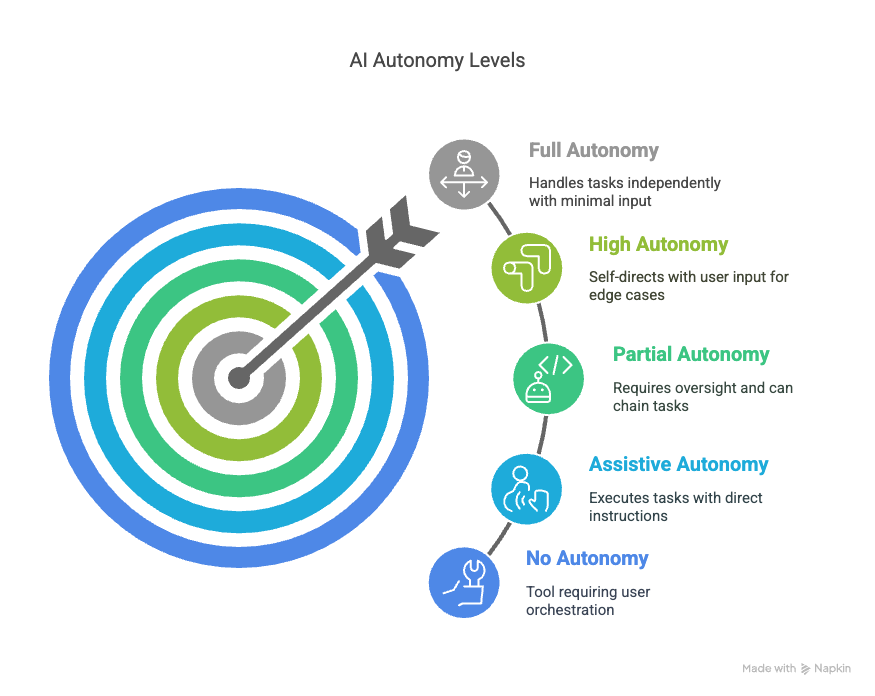
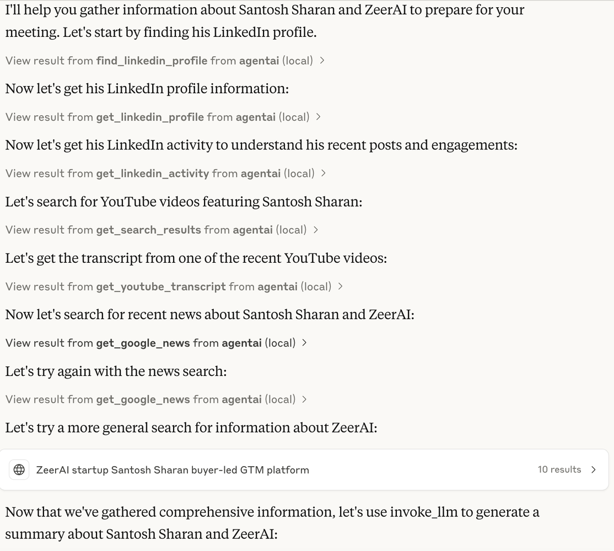

Autonomous Agents - A Multipart Series about Manus, Anthropic MCP and other related technologies is sponsored by Agent.ai - Discover, connect with and hire AI agents to do useful things.
I will start by saying that I am not a technical expert on this topic, and this is not a technical teardown (that is not my forte). My expertise is in using technologies to solve real business problems and then to share my experience. Doing this I hope saves others the time and effort that goes into experimentation and it helps people understand where the technology is today and use cases it works with and those it does not work with.
I started my experimentation to get deeper into how autonomous agents work and Anthropic MCP is the closest to something that I can build an autonomous agent with (without being a programmer).
An artificial intelligence (AI) agent is a software program that can interact with its environment, collect data, and use the data to perform self-determined tasks to meet predetermined goals. Humans set goals, but an AI agent independently chooses the best actions it needs to perform to achieve those goals - https://aws.amazon.com/what-is/ai-agents/
While the traditional definition of an agent assumes autonomy, I think there is value in human defined agents and autonomous agents (my clarification on the definition).

So, let's start with the autonomous agent use case that I use Anthropic MCP with Agent.ai tools - Meeting Preparation. We have all been in this situation. We have a meeting with an executive and you have not had time to prepare for the meeting and you want that 1 pager. You want to get the following information -
AND I want it in a nice document.
If it was completely autonomous, I would just say - "I am meeting with this Executive X at Company Y", please do some detailed research about this executive and generate a write up that will help me be prepared for an intro meeting.
Having done this many times, what I have noticed is that MCP tends to go through a trial and error process. So this is one of the cons of a completely autonomous agent. It will take your goal and make a determination of what steps it wants to take and then try them out and if a step does not work, it will try it in a different way.
This works great the first few times, when you are experimenting. At some point, you know what the steps are and you want it to execute the same way. You don't have this guarantee with an autonomous agent, as you don't control the execution flow.
To get around this I have started giving it very specific instructions on the tools it should use. I don't give it specifics on what to do. So here is what that looks like -
I have a meeting with "EXECUTIVE NAME", "TITLE" at "COMPANY". I would like you to use get_linkedin_profile, find_linkedin_profile, get_linkedin_activity, get_search_results to find any youtube videos he has been in, get_youtube_transcript for those videos, get_google_news to find latest news about him and then take all this information and use invoke_llm to generate a summary about EXECUTIVE NAME and COMPANY that will help me prepare for this meeting.
Depending on the company, I will sometimes ask it to use the get_company_object, company_financial_info and company_financial_profile to get more detailed company information.
Then I just run this and after a few minutes I have a well crafted output that is amazing at getting me prepared for my meeting. I did not have to build an agent in Agent.ai and learn how to use Agent.ai.
If anyone is interested in what this output looks like, here is one I did for an old high school friend of mine that I was meeting to talk about GTM - https://claude.site/artifacts/8f315ddc-5458-4321-80fa-4b334fba3cd9.
Here is a video where I show this process in action - https://youtu.be/4-80lrptO6g
Here is a screenshot of the steps that Claude went through to achieve the goal it was given -

So in case you are wondering what the downsides are (FOR NOW), here are some that I have run into and I would love it if people can share if they have found workarounds for this -
So where does this leave us. I think as a v1 of what autonomous agents will look like it is pretty amazing. I do not build an agent any more without first vibing with Claude + MCP. I have it generate all the steps, then test each step and only then do I finally build it in Agent.ai. I also don't debug any agent without using Claude + MCP. So I see tremendous value in it helping me build agents / test agents. I also see tremendous value in certain use cases, like the Meeting Prep agent where the steps are pretty obvious and there isn't a lot happening to just use Claude Desktop and not build an agent at all.
My parting words are to get hands on with Claude Desktop and MCP, if you are in the business of building agents, this is something you should absolutely try out.